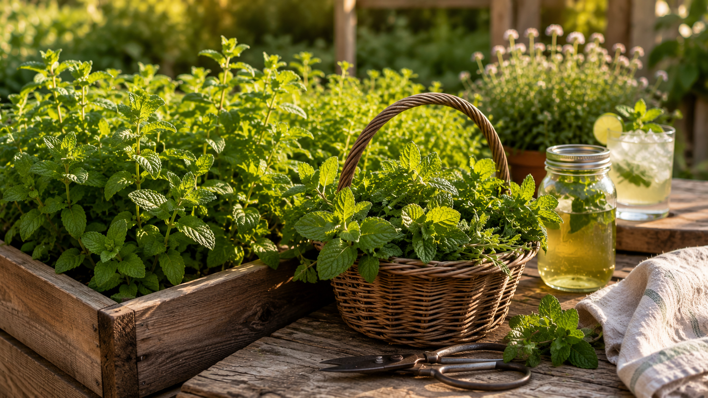
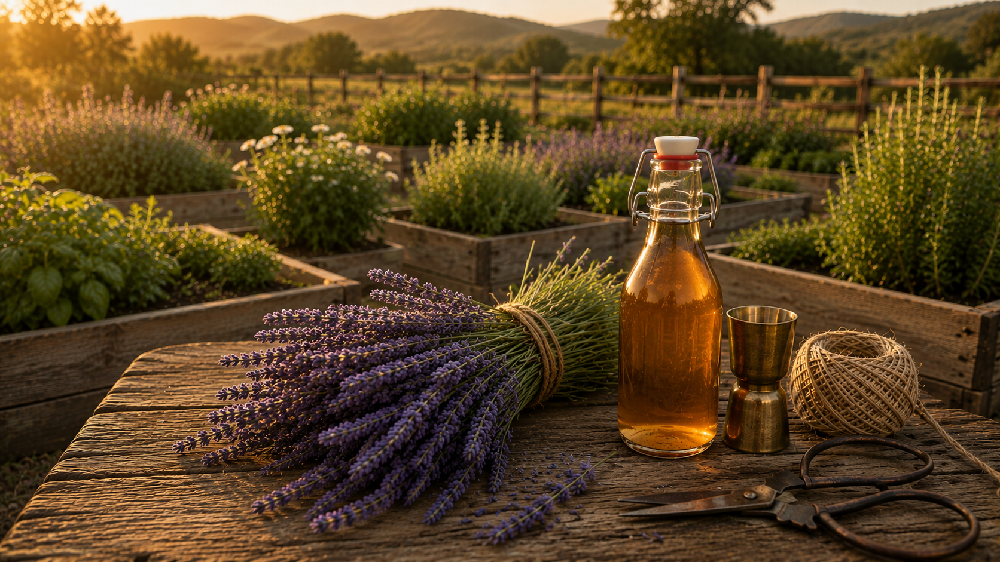

In the glass
What to Make with Garden Lemon Balm
Lemon balm's best drinks are clean, light, and built around its citrus-floral character. Start with the cold infusion and build from there.

Herb Reference · Complete Guide
Cocktail Herb Guide
Every cocktail herb in the bar garden — how it grows, tastes, and works in the glass. Lemon balm, mint, lavender, rosemary, basil, and thyme all in one place.
Explore the herb hub
Herb Guide · Mint
How to Grow Mint
Lemon balm's natural companion — bolder and more cooling, equally prolific and equally in need of containment. Everything you need to grow and use mint at the bar.
Mint guide
Herb Guide · Lavender
How to Grow Lavender
Lemon balm's natural companion in floral cocktails — lemon balm adds the citrus, lavender adds the bloom. Together they make some of the bar garden's most elegant drinks.
Lavender guide